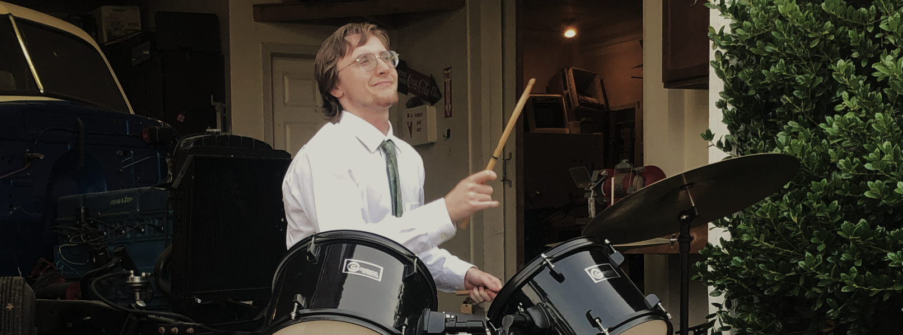

Alex Hartford

Hey, I'm Alex. Nice to meet you, friend.
I make games, short films, and music.
I'm currently working as a Graphics / GPU Tools SDET at Nintendo Technology Development in Redmond, WA.
@hartfordalex on 𝕏. I'm posting a bit more regularly now.
working on:
recent projects:
classics:
You can find more of my old stuff at the links above.
To help you get to know me, here's a list of...
Things I Love!
- rock climbing
- pixel art
- spikeball
- graphics programming
- Jonathan Blow's programming language
- ice hockey
- nondualism
My favorite games:
- UFO 50 (in particular, Divers, Party House, and Mooncat)
- Super Mario Galaxy
- Balatro
- Spelunky
- Dark Souls
- The Beginner's Guide
- The Witness
- Pikmin 4
- Morrowind
- The Legend of Zelda
- Fire Emblem, Genealogy of the Holy War
My favorite films:
- Mind Game
- Ping Pong The Animation
- Tatami Galaxy
- Wolf Children
- The Wind Rises
My favorite musicians:
- Mk.Gee
- Joni Mitchell
- Masakatsu Takagi
- Eirik Suhrke
- Jonathan Richman
My favorite books:
- The Book of Life by Jiddu Krishnamurti
- Being Myself by Rupert Spira
- The Courage to be Disliked by Ichiro Kishimi and Fumitake Koga
- The Art Spirit by Robert Henri
- Siddhartha by Herman Hesse
- The Waste Land by T.S. Eliot